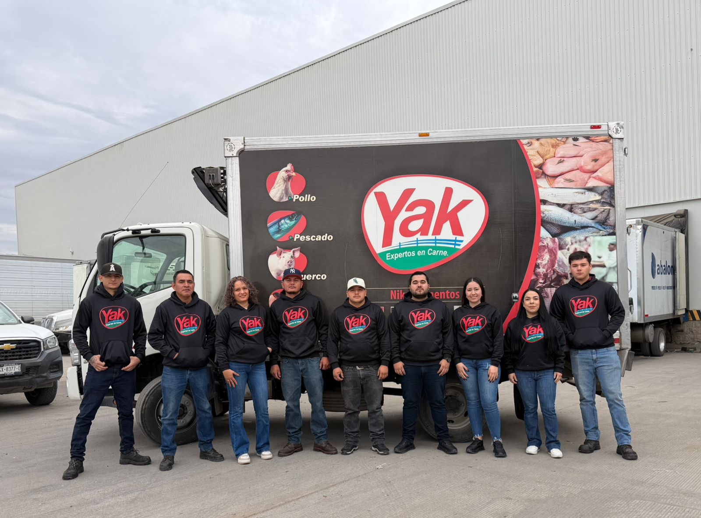

Quiénes Somos

Niku alimentos S.A de C.V
Hace más de 10 años, Niku Alimentos nació con un objetivo muy claro: brindar a cada cliente exactamente lo que necesita para hacer crecer su negocio. Desde entonces, hemos construido una forma de trabajo basada en la cercanía, el servicio y la capacidad de adaptación.
A lo largo de este tiempo, hemos reunido marcas reconocidas de productos cárnicos, seleccionadas por su calidad y prestigio. Hoy continuamos evolucionando con la mirada puesta en el futuro, manteniendo nuestra esencia: calidad, servicio y soluciones reales.
Qué Hacemos
Calidad Garantizada
Seleccionamos cuidadosamente productos que cumplen con los más altos estándares de higiene y sabor.
Distribución Eficiente
Red de distribución sólida que asegura que tu producto llegue a tiempo y en perfectas condiciones.
Atención Personalizada
Nos adaptamos a las necesidades específicas de tu negocio, brindando soluciones a medida.
Cobertura Nacional
Líderes en distribución cárnica con presencia en toda la República Mexicana.
En Yak Alimentos, llevamos la máxima calidad y frescura de nuestros productos hasta cualquier rincón del país, garantizando que tu negocio cuente con el respaldo de una logística líder, puntual y eficiente en cada entrega.